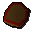

Wooden shield

| Config name | wooden_shield |
| Item id | 1171 |
| Value | 20 gp |
| Weight | 5lb |
| Members | No |
| Tradeable | Yes |
| Stackable | No |
| Equip slot | lefthand |
| Options | Wield |
| Category | armour_shield |
| Defined in | scripts/skill_combat/configs/melee/shields.obj |
| Equipment stats | Stab def 4, Slash def 5, Crush def 3, Magic def 1, Range def 4 |
Wooden shield
A solid wooden shield.
Show 1 ground spawn on the world map → Open in knowledge graph →
Sold at
| Shop | Shopkeeper | Stock |
|---|---|---|
| Cassies' Shield Shop. | 5 |
Ground spawns
| Area | Coordinates | Level | Count | Map |
|---|---|---|---|---|
| Palace | 3204, 3515 | 0 | 1 | view |
Referenced in scripts
scripts/player/scripts/equip.rs2scripts/tutorial/scripts/guides/combat_instructor.rs2scripts/tutorial/scripts/tutorial.rs2